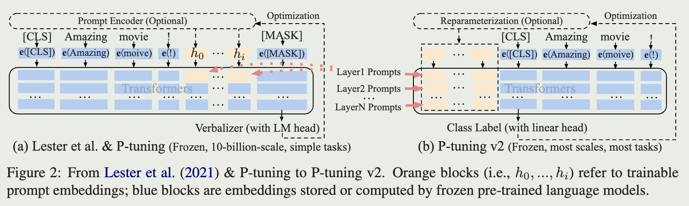

P-Tuning v2: Prompt Tuning Can Be Comparable to Fine-tuning Universally Across Scales and Tasks
2024-4-13
intro
P-Tuning v2 is an optimized and adapted implementation of Prefix Tuning in NLU tasks and achieve the effect of fine-tune, which surpasses the prompt-tuning and p-tuning
Background
Lack of universality across scales:
- prompt-tuning can be comparable to fine-tuning when the model scales to over 10B but perform much worse for medium-sized models (from 100M to 1B)
Lack of universality across tasks:
- prompt-tuning and p-tuning perform poorly on sequence tagging tasks (due to verbalizers)
Lack of tunable parameters:
- prompt-tuning and p-tuning only insert continuous prompts into the input embedding sequences, which lead to:
- limited tunable parameters due to constraints of sequence length
- no direct impact on model predictions
Optimization and Implementation
The prompts will be inserted into KV matrices for each transformer
Reparameterization
prompt-tuning use MLP and p-tuning use LSTM as reparameterization encoder, however, its usefulness depends on tasks and datasets in NLU
Prompt length
different NLU tasks achieve their best performance with different prompt length
Classification Head
P-Tuning v2 applies a randomly-initialized classification head instead of verbalizers due to its uselessness in full-data setting